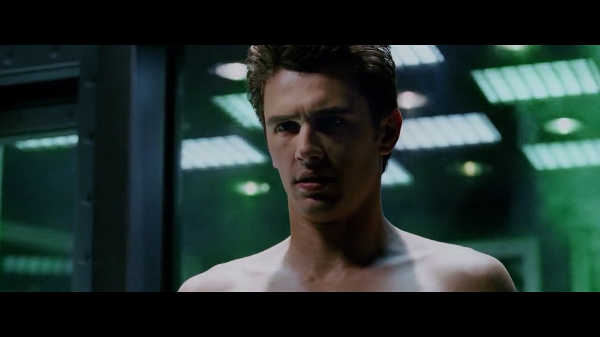

Season 1_Harry Osborn(James Edward Franco)
회사의 경영 위기를 겪고 퇴사를 권유 받자 자신이 실험중이던 잠재력 각성약물을 본인에게 투여해 빌런이 되어버린 과학자.
회사의 경영 위기를 겪고 퇴사를 권유 받자 자신이 실험중이던 잠재력 각성약물을 본인에게 투여해 빌런이 되어버린 과학자.
인체실험으로 빨리 성과를 내라는 윗선에 저항하다가 결국엔 자신 몸으로 임상실험을 하다 괴물이 되어버린 빌런.
거짓망, 특수효과 환영에 달인. 모두를 속이고 영웅이 되기 위해 뒤에서 작당을 꾸미는 빌런